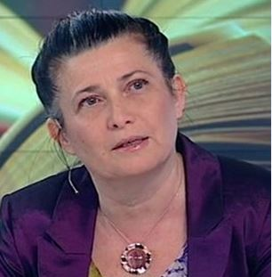
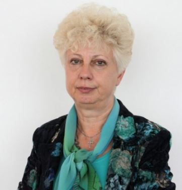
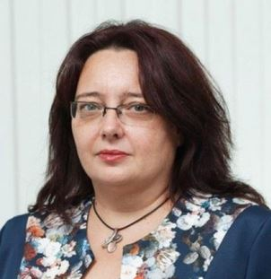
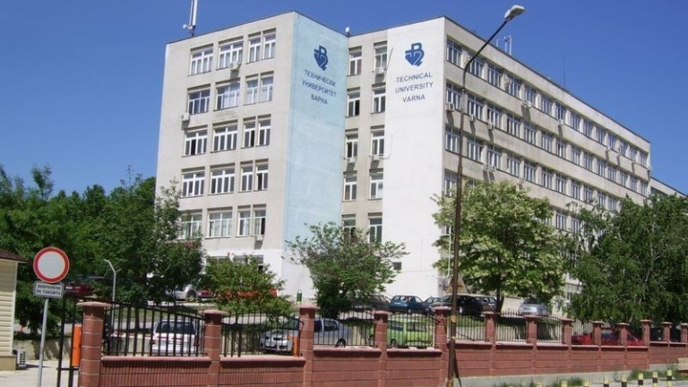
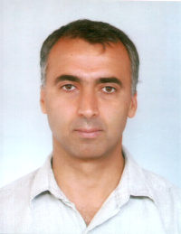

В специалност „Информатика и компютърни науки“ се обучават специалисти в областта на компютърните науки – езици за програмиране, софтуерни системи, бази данни, уеб дизайн и програмиране и др.
Успешно завършилите се реализират като програмисти, администратори на бази данни, разработчици на приложения, проектанти на информационни системи и др.
Образователно-квалификационна степен: бакалавър
Професионална квалификация: бакалавър по компютърни науки
Форма и продължителност на обучението:
– редовна – 8 семестъра
– задочна – 8 семестъра
– дистанционна – 8 семестъра
Език на преподаване: български / английски език
Катедра „Информатика и икономика“ поддържа ползотворно парньорство с ИТ бизнеса, както с конкретни фирми, така и с браншови организации, които подкрепят обучението в бакалавърските и магистърските програми. Организират се и се провеждат съвместно майсторски класове.
Партньори в обучението на студентите в бакалавърската програма „Информатика и компютър-ни науки”, с подписани рамкови споразумения и партньорски договори са: ESI-SEE, BASSCOM, ORACLE ACADEMY, Sirma Group, Институтът за съвременни физични изследвания и др.
Варненски свободен университет „Черноризец Храбър“ е член на: BASSCOM (Българска асоциация на софтуерните компании), ИКТ Клъстер – Варна, РАПИВ (Регионална асоциация по предприемачество и иновации Варна) и др.
Топ преподаватели

Доц. д-р Галина Момчева
Доц. д-р Галина Момчева е ръководител на катедра "Информатика и компютърни науки" @ВСУ
Научни интереси: UI/UX NUI Data Science програмиране социално мрежови анализи
Дисциплини:
• Програмиране;
• Академично писане;
• Структури от данни и алгоритми;
• Програмиране;
• Потребителски интерфейси и използваемост;

Проф. д-р Теодора Бакърджиева
Проф. д-р Теодора Бакърджиева е преподавател в катедра “Информатика и компютърни науки” @ВСУ
Научни интереси: компютърни мрежи уеб технологии управление на проекти управление на знанието
Дисциплини:
• Компютърни мрежи и комуникации
• Оценка и SEO оптимизация
• ИТ инфраструктура
• Технологии за електронен бизнес;

доц. д-р Веселина Спасова
доц. д-р Веселина Спасова е научен секретар във факултет "Международна икономика и администрация" @ВСУ
Научни интереси: Бази от данни, Информационен мениджмънт, Технологично предприемачество.
Дисциплини:
• Бази данни
• Информационен мениджмънт;
• Лидерство на екипи;
• Технологично предприемачество;
• Електронни спортове.
Технически университет - Варна
Star Rating

Обучаваща катедра: Софтуерни и интернет технологии
Форма на обучение: Редовна (4 години)
Семестриална такса: Редовна 375 лева
Образователно – квалификационна степен: „Бакалавър“
Професионална квалификация: „Софтуерен инжинер“
Студентите от специалност "Софтуерни и Интернет технологии" получават диплома за завършено висше образование за образователно-квалификационна степен "Бакалавър" с професионална квалификация "Компютърен инженер".
Обучението се извършва в редовна форма с продължителност 4 години. Провежда се по нов учебен план, който е съобразен с най-новите изисквания на международните организации IEEE /Институт на инженерите по електротехника и електроника/ и АСМ /Асоциация по компютърни машини/. Този план е съгласуван с водещи фирми от областта на информационните технологии, както и с учебните планове на редица европейски университети.
Обектите на професионална дейност на инженера със специалност "СИТ" са проектирането, разработката и поддържането на софтуерни и Интернет системи и приложения, разширяване на областта на приложение на компютърните системи и мрежи и информационните технологии, успешно прилагане на съвременните и непрекъснато развиващи се технологии за системно и приложно програмиране, разпределена и паралелна обработка, изкуствен интелект, както и усъвършенстване и разширяване на възможностите на Интернет и Интернет приложенията.
Високо теоретичната и практическа подготовка на инженера по специалността му дава възможност да извършва различни видове професионална дейност - управленческа, технологична и изследователска. Реализацията му може да бъде както в държавния, така и в частния сектор на икономиката, услугите и обслужването. Инженерът със специалност СИТ е подготвен така, че да може лесно да се адаптира към изискванията на отделните йерархични нива във фирми и учреждения, имащи разнообразна по характер дейност.
Към специализиращата катедра "Компютърни науки и технологии" функционират Мрежова академия на CISCO Systems и Академии по информационни технологии на Microsoft и Oracle, в които студентите могат да се подготвят за получаване на международно признати сертификати.
Топ преподаватели

проф.д-р ТОДОР ДИМИТРОВ ГАНЧЕВ
проф.д-р ТОДОР ДИМИТРОВ ГАНЧЕВ е Заместник-ректор, висше училище
Научни интереси: Цифрова обработка на сигнали Статистически методи за класификация на данни Обработка на реч и аудиосигнали Биоакустика
доц. д-р ХРИСТО ГЕОРГИЕВ ВЪЛЧАНОВ
доц. д-р ХРИСТО ГЕОРГИЕВ ВЪЛЧАНОВ е ръководител на катедра "Компютърни науки и технологии"
Научни интереси: Алгоритми за възстановяване в МПЛС мрежи Web- базирани лекции, симулации и тестове за самопроверка и проверка Проектиране по част автоматика и КИП, както и част Електрическа
доц. д-р ВЕНЕТА ПАНАЙОТОВА АЛЕКСИЕВА
доц. д-р ВЕНЕТА ПАНАЙОТОВА АЛЕКСИЕВА е преподавател във Факултета по изчислителна техника и автоматизация
Дисциплини:
• Администриране на локални и Интернет мрежи
• Електронна търговия;
• Интернет сървъри и услуги;
• Компютърни мрежи;
• Мрежово администриране.